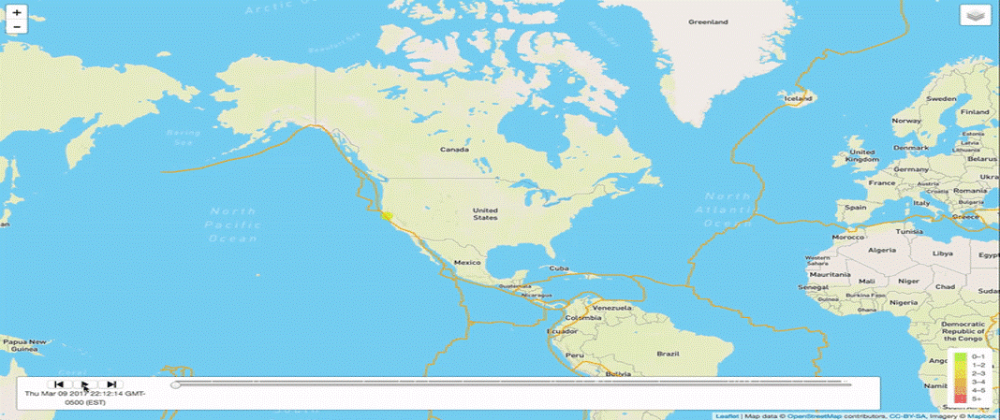

Time Keeps On Ticking
Air travel is the fastest method of transport around, and can cut hours or days off of a trip. Transoceanic travel would be a factor of months without planes, and numerous rural zones can't be reached without it. As the WV Department of Aviation says, "One to two days travel by auto can be accomplished in one to two hours of flight.".
